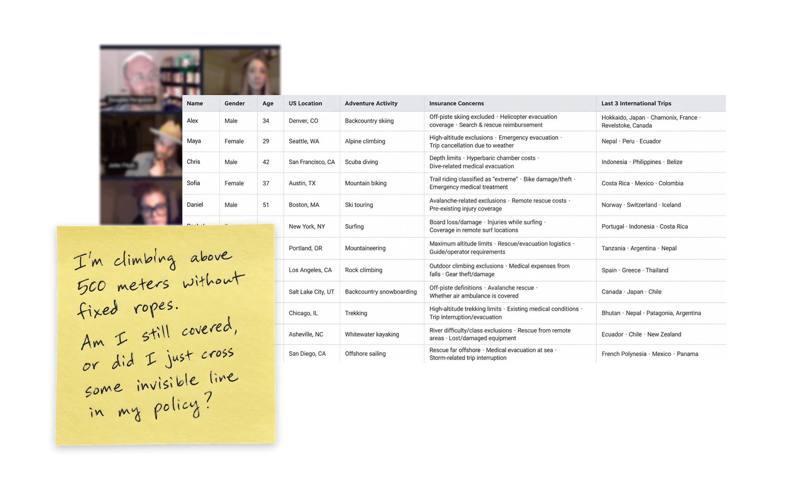
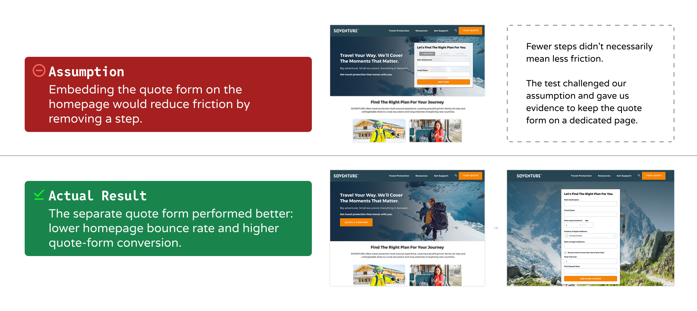
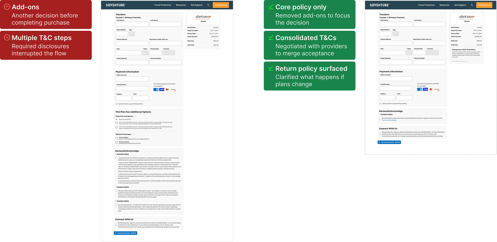

Soventure / Case study
Making travel insurance easier to understand and buy.
01 / Summary
Senior UX Designer · 2023–2026
I owned the plan comparison, quote, and purchase experience, working with a graphic designer, an insurance specialist, and a front-end developer.
02 / Problem
Travelers couldn’t tell whether a plan covered their actual trip. Insurance summaries were generic, even when the questions were specific: would this policy cover backcountry skiing, or the reason they might need to cancel?

03 / What we learned
Medical and cancellation coverage mattered most. Travelers needed to understand which cancellation reasons were covered, and activity coverage was often unclear. Baggage benefits mattered less.
Fewer steps did not make a better journey. We expected a homepage quote form to reduce friction; travelers completed the journey more often when the form had its own dedicated page.
Assumption → actual result

04 / Key decision
Keep the dedicated quote page, and simplify the final purchase step. I argued for removing the upgrade section from checkout; the head of ecommerce wanted to retain it because of the risk to average order value. Provider terms raised a separate concern about company risk.
We accepted a slight drop in average order value in exchange for a clearer, faster path to purchase. The increase in conversions more than offset that decline, supporting our decision to adopt the streamlined flow.
Simplified checkout

05 / Design


06 / Outcome
20% higher conversion than InsureMyTrip in an A/B test over 1–2 weeks. Traffic volume is not disclosed.
The parent site adopted changes including the quote results, plan layout, and shortened purchase flow.
07 / Reflection
Speed and completeness pulled against each other. Removing the upgrade section was the clearest case: I accepted a possible average-order-value tradeoff for a clearer purchase journey. I would assess conversion alongside order value to understand the full business effect.